Mon père, ce tueur
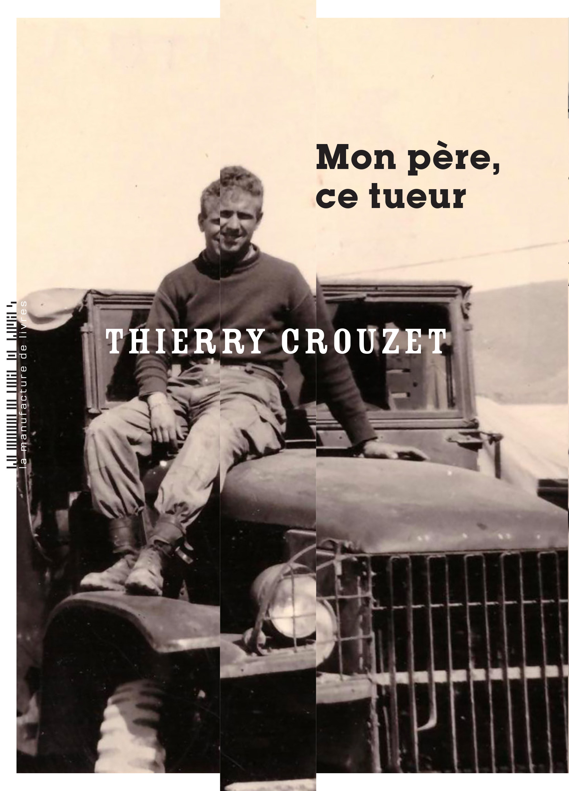
Mon père, ce tueur
Une autofiction familiale
Extrait
ebook 11.99 € : 7switch, Amazon, Apple, Bookeen, Google, Kobo.papier 17.90 € : Amazon, Cultura, Decitre, Eyrolles, Fnac, Furet du Nord, Lalibrairie.com, Les Libraires, Librest, Mollat, Paris Librairies, Sauramps.
« J’ai toujours eu peur de mon père. Je savais qu’il avait déjà tué au cours de la guerre d’Algérie. J’étais persuadé qu’il pouvait recommencer. »
Thierry grandit dans l’ombre glaçante de Jim, élaborant des scénarios de fuite et se barricadant toutes les nuits dans sa chambre. Quelques années après la mort de ce père menaçant, aidé de photographies et des carnets où Jim ne parle que de la guerre, le fils décide de partir à la recherche du fantôme, de retrouver par les mots celui qui avait été un jeune garçon à qui l’on avait appris à tuer.
Comment j'ai écrit le roman
Ils en parlent
- 17/9/2020, OmbreetPoussiere, C'est un véritable parpaing que j'ai pris sur la tête.
- 6/8/2020, le blog de mimi, Cet ouvrage est ce qu’un fils pouvait écrire de plus beau sur son père.
- 18/6/2020, Sébastien Vidal, Ce récit d’une vie est très émouvant, parce que les mots choisis sont les bons, qu’il y a la sincérité partout et une sorte de libération aussi.
- 11/5/2020, Fanny Nowak, Un récit bouleversant sur l'origine de cette violence, dans ce qu'elle impose aux autres, dans ses secrets qui hantent une mémoire familiale. Thierry Crouzet y fait face pour aller vers son moi profond, évacuer, enfin, ce qui ne lui appartient plus.
- 12/1/2020, Nathalie Delaude, Un livre-uppercut, de ceux qui laissent des bleus au cœur une fois refermés.
- 9/1/2020, Caroline Fredon, Mon père ce tueur est un livre marquant, le récit d’un apaisement.
- 3/1/2020, Midi Libre, Un récit sans concessions, mais lucide qui emmène le lecteur dans les tréfonds, parfois les plus noirs, de l'âme humaine confrontée à la violence et à la guerre.
- 30/12/2019, Christophe Henning, RCF, Le jeu des armes et de l'armée, avec Jean-Michel Aphatie et Thierry Crouzet.
- 20/12/2019, Librairie Les Rebelles Ordinaires, La Rochelle, Une Claque ! Un roman qui vous hante longtemps après sa lecture !
- 15/12/2019, Philippe Sens, France 3, Ne pas transmettre de père en fils, l’héritage de la violence.
- 7/12/2019, NoId, C’est très dur et c’est très beau.
- 17/11/2019, Readlookhear, Un roman d'amour filial tellement puissant. C'est magnifique.
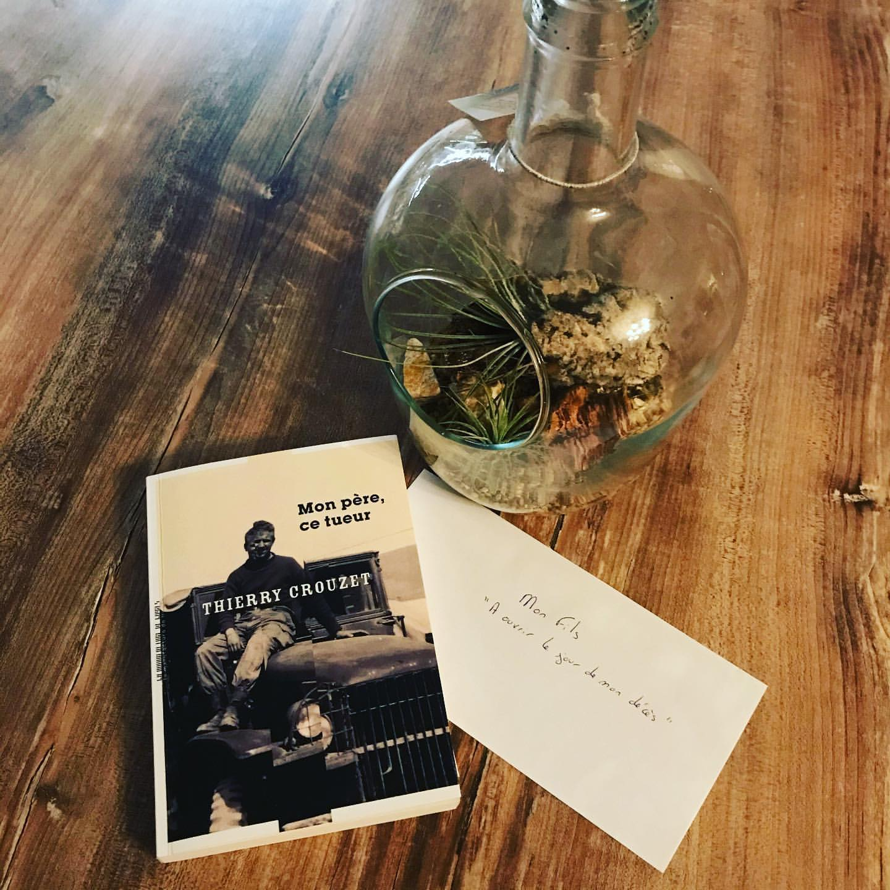
Readlookhear
- 13/11/2019, Gilles Heuré, Télérama, Un livre intime qui se lit comme un livre d'histoire.
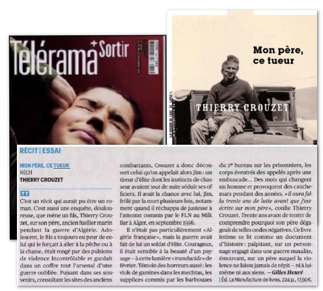
Télérama
- 13/11/2019, Danièle Secrétant, Factuel.info, Un récit très fort, un récit proche d’un récit biblique, un récit capable de nous faire pencher sur notre propre histoire, individuelle et collective.
- 12/11/2019, mel_coccinelle, Un récit prenant sur la guerre d'Algérie, troublant, dérangeant, vrai.
mel_coccinelle
- 11/11/2019, Michel Collart, Un récit effroyable sur la guerre d’Algérie et une évolution émotionnelle prenante jusqu’à la dernière page.
- 10/11/2019, Mathilde Jarrossay, Untitled Mag, Un roman sur la mémoire du père mais aussi sur la mémoire de la guerre.
- 5/11/2019, Blandine Hutin-Mercier, La Montagne, Un livre de vérité et d'affection, de libération et d'enracinement. Un livre profondément humain.
- 29/10/2019, Pascal Giraud, Librairie Histoires sans fin, La Roche-Sur-Foron, Par delà l'héritage de la violence, l’auteur nous livre un récit poignant sur les relations père fils.
- 25/10/2019, Waldeck Moreau, Librairie L'Opsucule, Montpellier, Une histoire douloureuse au souffle nerveux.

Waldeck Moreau
- 16/10/2019, Addict-Culture, Catherine Dô-Duc, une histoire intensément humaine et personnelle, celle d’une relation père-fils abîmée qui ne sera jamais réparée.
- 10/10/2019, Librairie La folle aventure, Trevoux, Style limpide et incisif, travail important de documentation, récit rythmé et suspense jusqu’au bout.
- 8/10/2019, Librairie La Cavale, Montpellier, Un roman comme une délivrance, touchant et plein d'espoir.
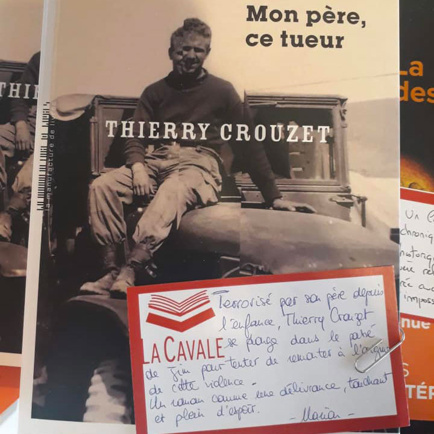
Librairie La Cavale
- 6/10/2019, Librairie Tome 7, Paris, Un récit au style sobre et précis dans lequel T. Crouzet s'interroge sur le poids de l'hérédité et la transmission des défaillances familiales.
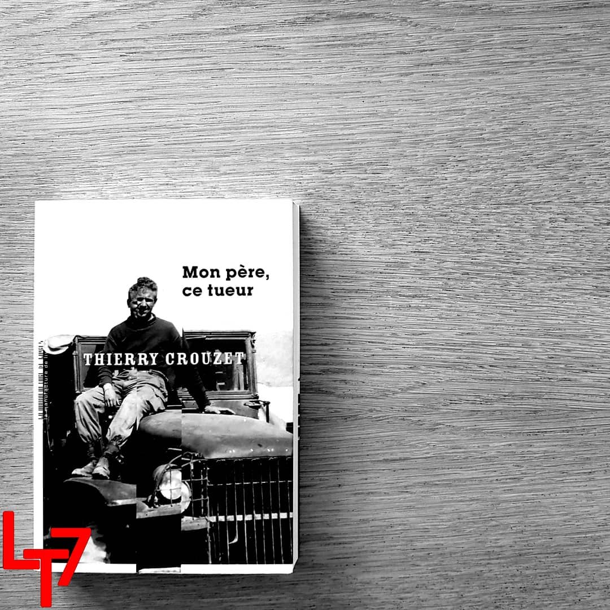
Librairie tome 7
- 3/10/2019, Bepolar.fr, interview.
- 30/9/2019, Michel Dufranne, RTBF, Un récit de réconciliation d’un fils pour son père.
- 16/9/2019, Buffy Austen, Capable de dire malgré tout « je t’aime papa ». Bravo. Un très beau livre.
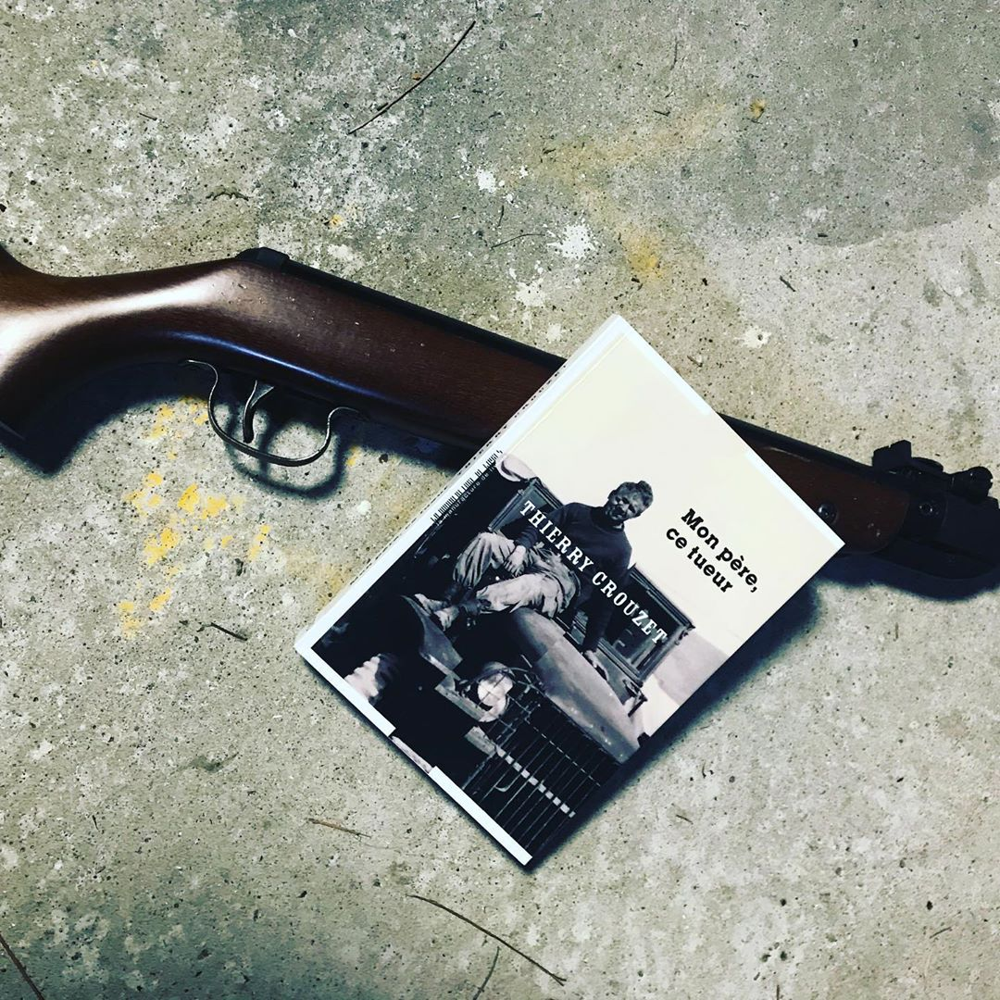
Buffy Austen
- 13/9/2019, RCF Limousin, Le dernier roman de Thierry Crouzet , Mon père ce tueur paru aux éditions La manufacture de livre est bouleversant et captivant.
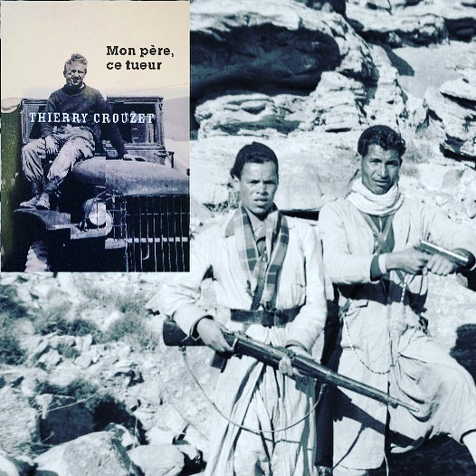
RCF
- 9/9/2019, John Diz, Cette lecture m'a remué, j'en sors fatigué après une lecture rapide, presque frénétique, la tête pleine de réflexions, de remises en questions. Je vois ce livre comme un moteur.
- 9/9/2019, Valérie Hernandez, lokko.fr, Un bon antidote à Yann Moix. (…) Derrière la terreur, l’amour filial en embuscade.
- 9/9/2019, RCF Limousin.
- 7/9/2019, Hubert Guillaud, Comment ne pas ressembler à celui auquel on ressemble malgré tout ?
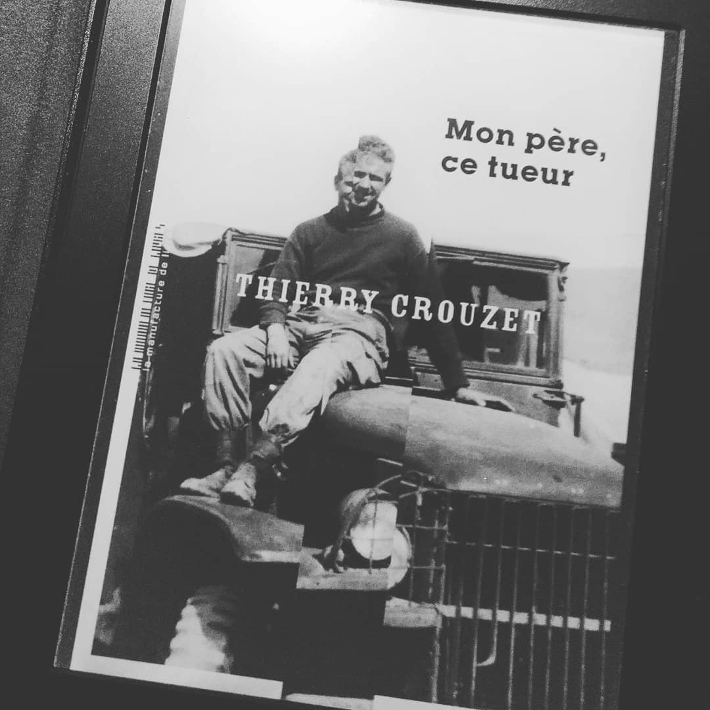
Hubert Guillaud
- 6/9/2019, Evelyne Mertens, Histoiredevies, Le texte habilement rythmé se lâche difficilement avant son dénouement. Percutant.
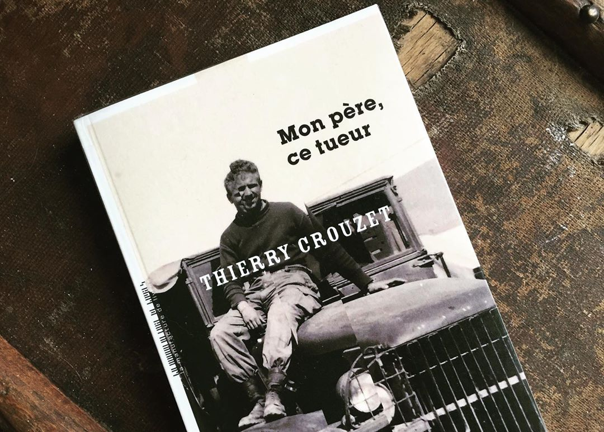
Histoiredevies
- 5/9/2019, Stéphanie Dupays, Le Monde des livres, À partir des notes de son père et d’une ample documentation, l’auteur compose un récit saisissant et restitue un peu d’humanité aux vies minuscules lâchées dans un conflit qui les dépasse et dont la violence les hante pour toujours.
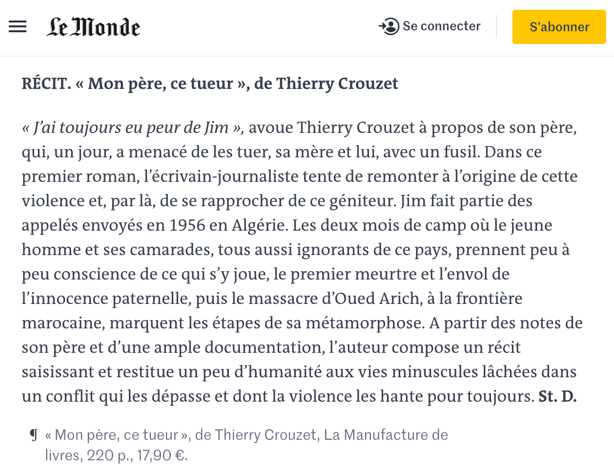
Le Monde des livres
- 1/9/2019, Diabolopasteque, Un livre bouleversant.
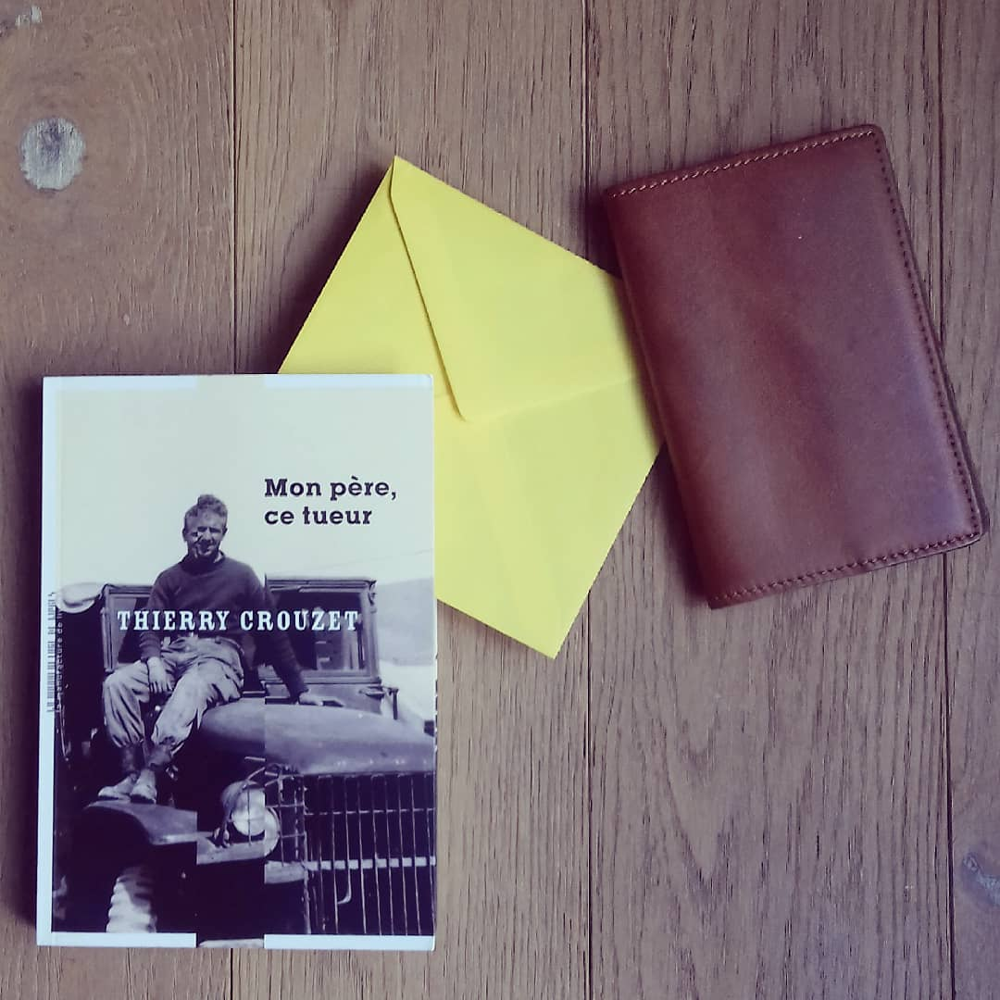
Diabolopasteque
- 31/8/2019, Agnès Maillard, Mon père, ce tueur marque une étape dans la carrière de Thierry Crouzet et est assurément son meilleur livre.
- 30/8/2019, Alexandra, Lasemeusedelivres, Un récit sublimé par une très belle écriture.
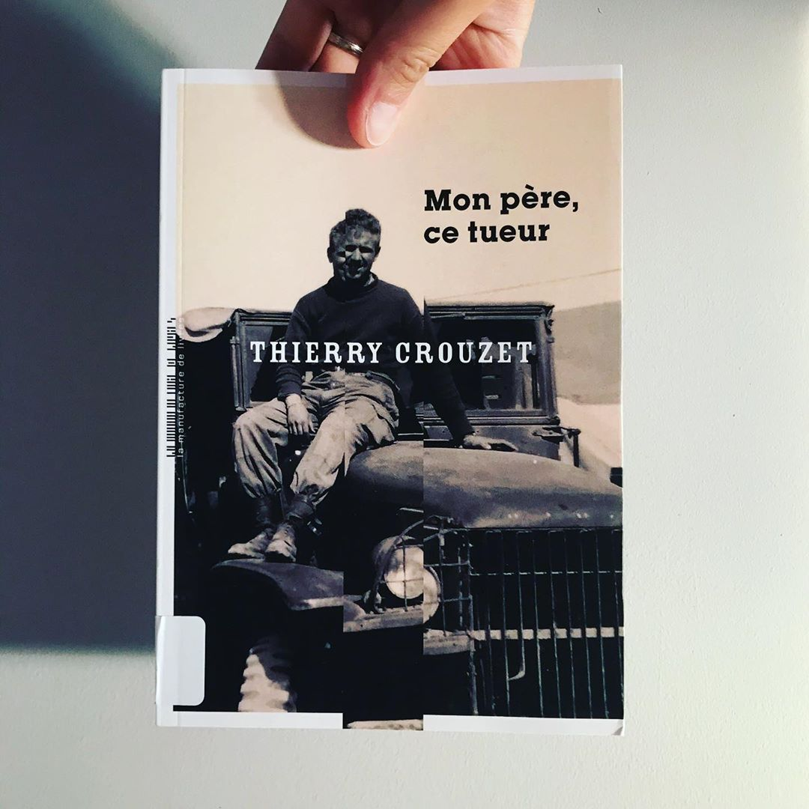
Lasemeusedelivres
- 28/8/2019, Seb Musset, Le style est très scénaristique entrecoupé de courtes mais brillantes descriptions de la vie et des lieux de l'Algérie. Ici tout est crédible, vécu par procuration, on a l’impression d’un roman autobiographique.
- 27/8/2019, Librairie Saint-Christophe, Lesneven, Un roman qui ne vous lâche pas…
- 27/8/2019, Frédérique Roussel, Libération, La famille entre réalité et frictions.
- 25/8/2019, Fanny, Mes pages versicolores, Le sujet est très dur et ne laisse pas de répit.
- 24/8/19, Séverine Chevalier, Absolument magnifique, d'une justesse dans l'écriture qui m'a paru totale.
- 24/8/2019, Librairie L'Autre Monde, Avallon, Ce roman est une autopsie incroyablement lucide de l'âme humaine, une recherche des origines de la violence qui m'a beaucoup touché.
L'autre monde
- 24/8/2019, Olivier Matinelli, J’ai tourné la dernière page avec de petites larmes au bord des yeux.
- 22/8/2019, Francis Petiot, Fnac Montpellier, Poignant comme rarement, juste, touchant.
- 22/8/2019, Librairie Gibier, Pithiviers, Un de mes grands coups de cœur et de poing ! Récit courageux et nécessaire !
- 19/8/2019, Philippe Castelneau, Sauramps Montpellier, Comme pour tout grand livre, c’est la part de fiction que Crouzet y injecte qui rend le sien plus vrai encore. Plus vrai et plus juste.
- 14/7/2019, Lilian Bathelot, Un truc magnétique qui te colle aux yeux et te balance dans une ronde d'émotions contradictoires dont tu peux pas sortir.
- 12/7/2019, Furet du Nord, Les 50 romans de la rentée littéraire.
- 29/6/2019, François Bon, SP65.
- 17/6/2019, Jean-Hugues Villacampa, imaJn'ère, À ne rater sous aucun prétexte !
- 3/6/2019, Katia Panier, Sauramps Montpellier, Bouleversant.
Fiche produit
- Éditeur : La manufacture de livres
- Sortie : 22 août 2019
- Nombre de pages : 224
- Contact libraire : Marie-Anne Lacoma
- Babelio | Goodreads | SensCritique | Google | Statistiques
- ISBN papier : 9782358875240
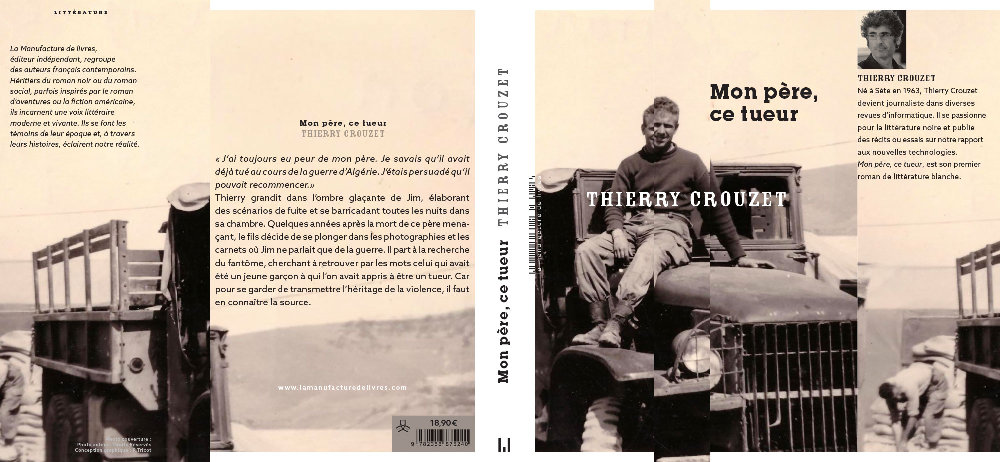
Planche Mon Père, ce tueur
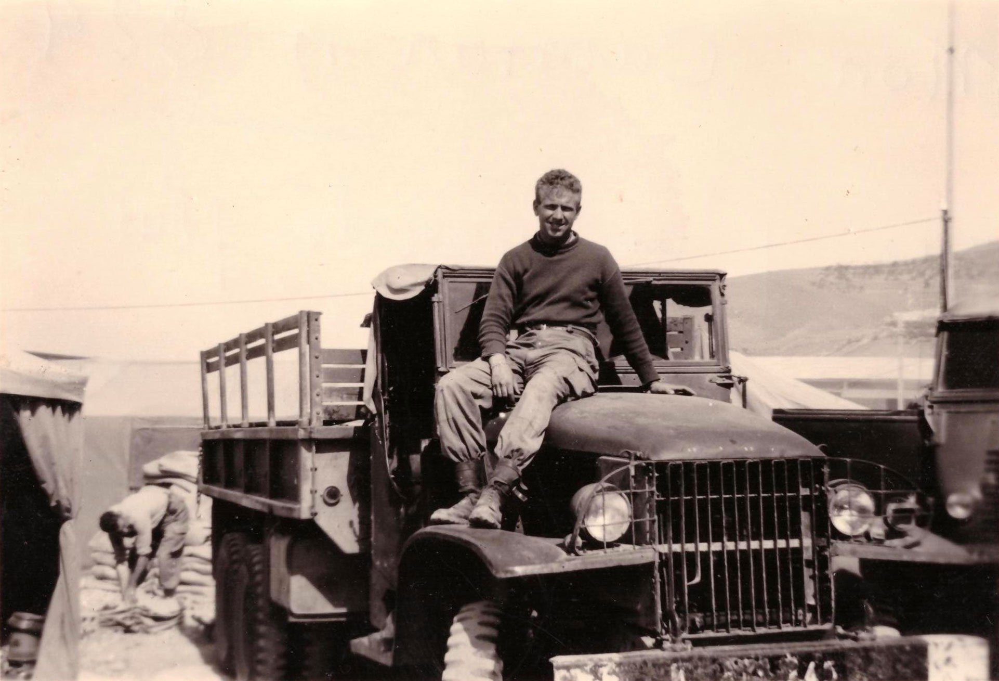
Mon père sur son GMC
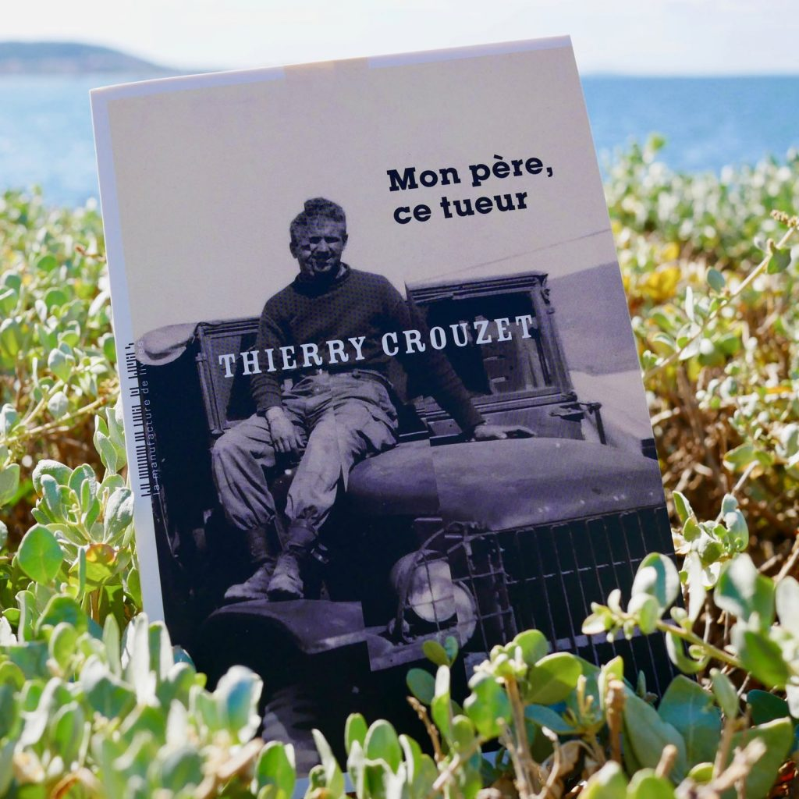
Mon père, ce tueur
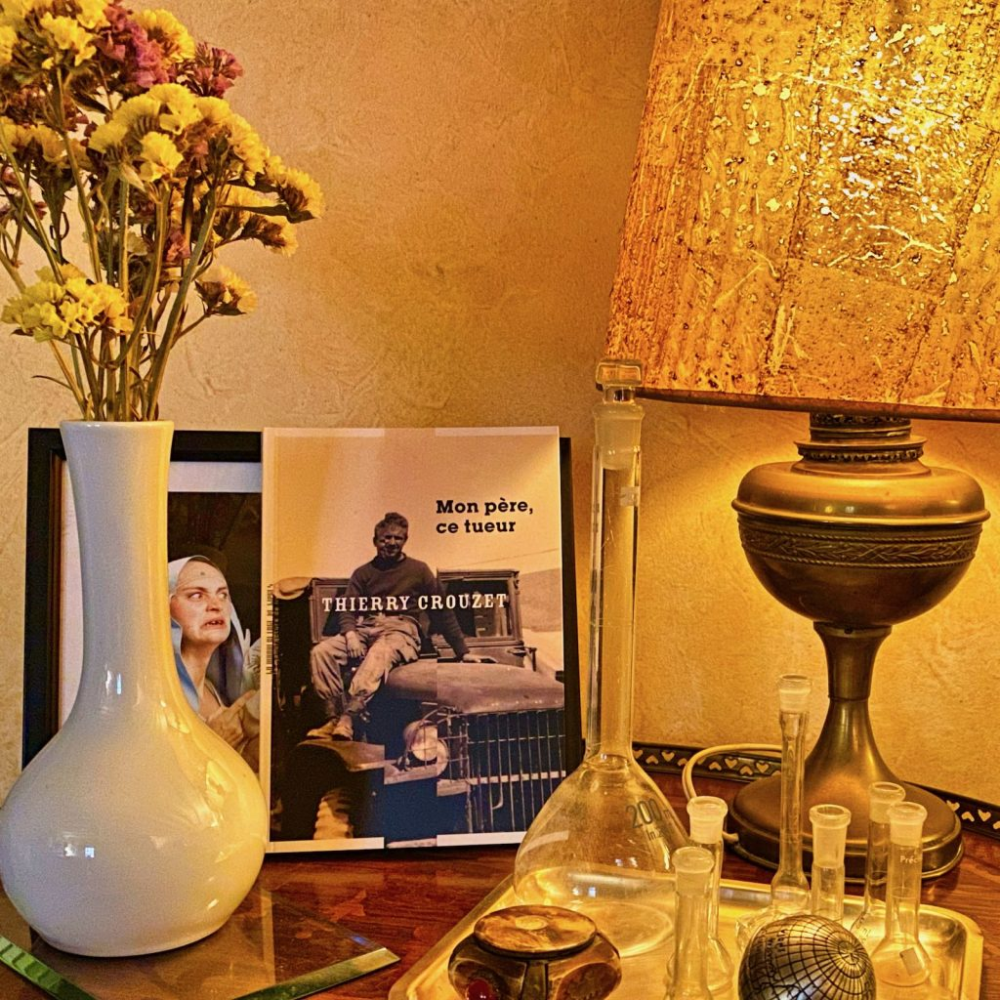
Mon père, ce tueur
Sommaire | Texte publié jeudi 28 mars 2019